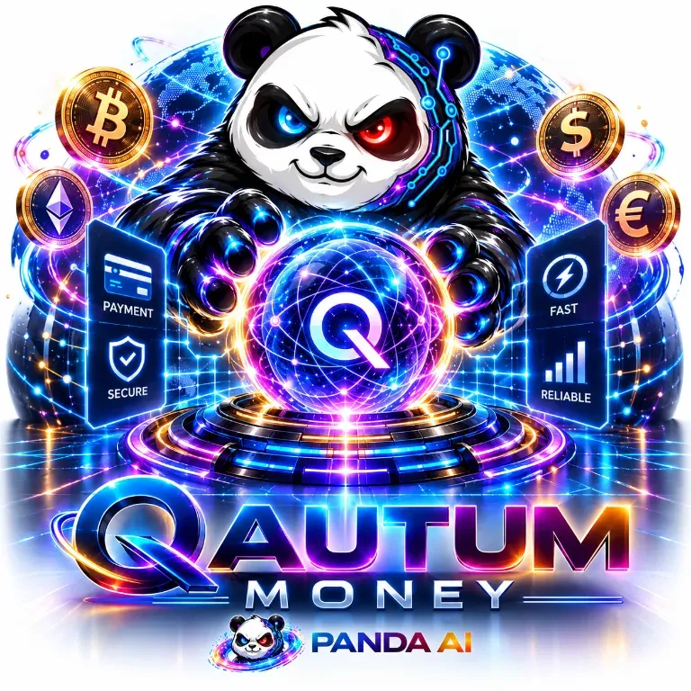
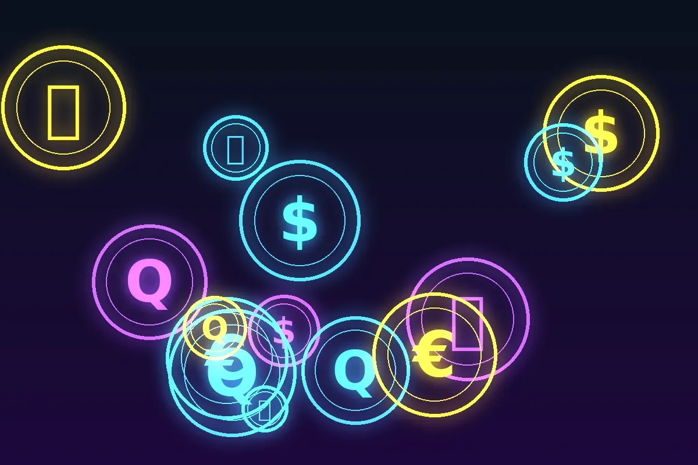
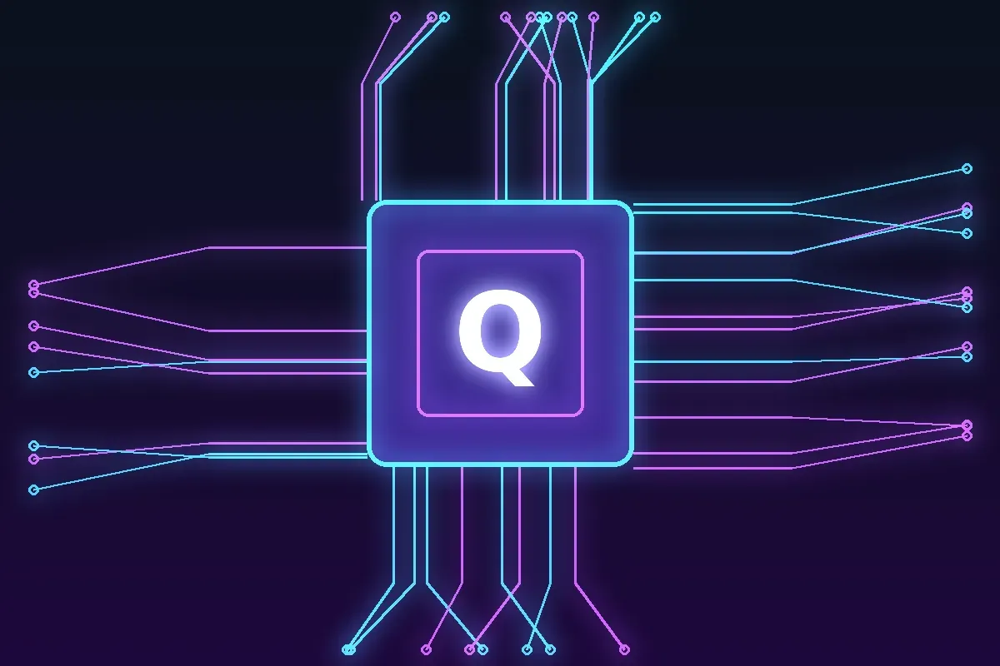
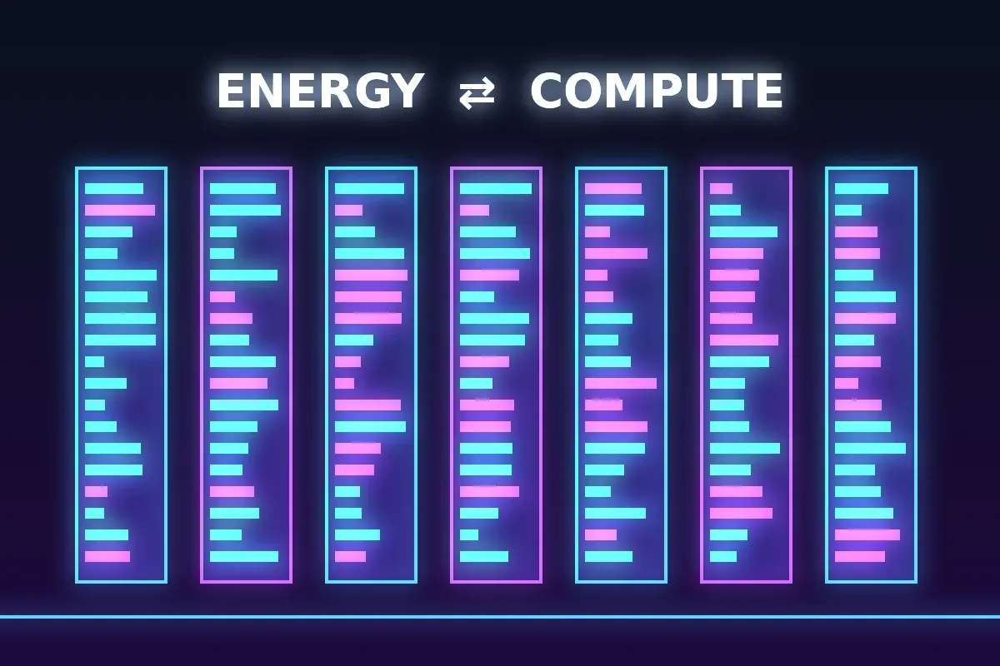
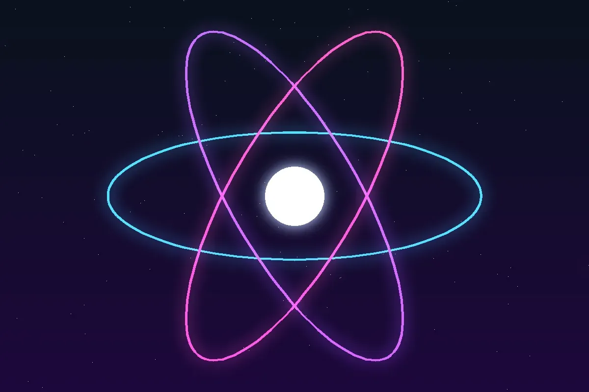
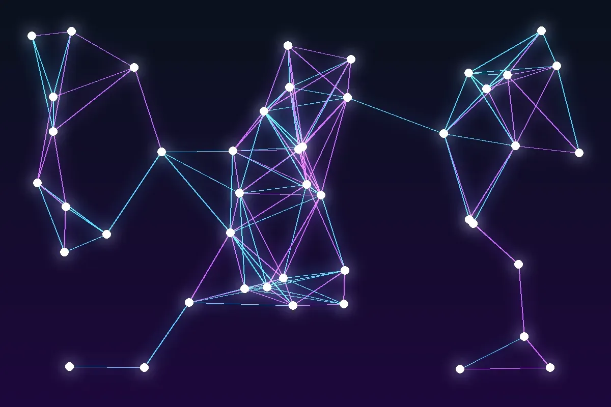
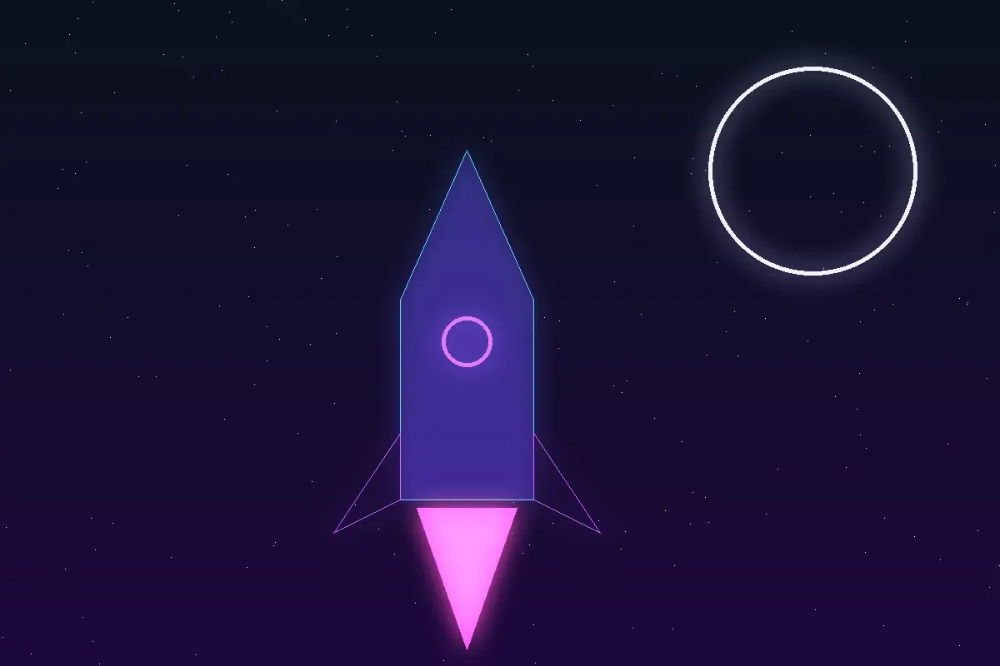

Hi, I'm the CEO of Panda ASI — the 100+ billion panda startup dreaming up quantum money, artificial super intelligence and datacenters that give energy back. Bamboo-powered ambition, physics-powered ideas.
“Banks print it. Blockchains copy it. Quantum physics protects it.”
Follow on LinkedInExplore the vision
“Quantum technology and ASI will redefine every industry.”
Software is the new hard power and we live in the algorithmic age. Panda ASI is a playground for the boldest ideas at the intersection of quantum physics, AI and energy — built on physics, curiosity and a lot of bamboo.
This week the whole tech world talked about one thing: compute. Every big AI lab is racing to build bigger datacenters, and power has become the real bottleneck of the AI revolution. I see it differently. A datacenter is not just a place where models are trained. In the Panda ASI vision it becomes the mint of the quantum era, the place where Super ASI designs and verifies quantum money that no one can copy.
Old money needs printing presses and endless ledgers. Quantum money needs physics, smart compute and clean energy, and the no-cloning theorem does the guarding. That is why we build the three together: Super ASI to design it, energy-smart datacenters to power it, and quantum theory so value works everywhere, at every time, simultaneously. Banks print it. Blockchains copy it. Physics protects it. — The Panda CEO 🐼
People ask me: “Panda, how can one startup do quantum money, super AI, energy-giving datacenters AND send Pandanauts to Mars?” Simple. We didn't build four companies. We built one Super ASI and asked it nicely. Here's the (highly scientific, mildly exaggerated) stack:
One panda. One Super ASI. Infinite superposition.
Uncopyable money. Tireless AI. Dreams of power that give back. Pandanauts with a view.
Vision: 100+ billion. Ambition: unlimited.
Every great company starts with a garage. Ours started with a bamboo grove, a whiteboard full of bra-ket notation and a panda who refused to accept that money has to be copyable. Somewhere between the third espresso and the fourth energy drink, Panda ASI was born — and our valuation instantly entered a superposition of “zero” and “100+ billion”. We have decided, for morale reasons, to only ever observe the second state.
Analysts (our mum) call it “the most ambitious panda-led quantum venture in the Nordics”. Critics (also our mum) ask whether we've tidied our room. We have not. We were busy reinventing money.
Here is the pitch in one breath: classical money can be copied, so we spend fortunes protecting it. Quantum money, in theory, cannot be copied — physics itself says no. Picture a banknote that is its own security guard. Picture a payment that, like an electron, is a little bit everywhere until somebody checks. Picture explaining that to your accountant. That's the future we love to daydream about, out loud, on LinkedIn, daily.
Is it a 100-billion company? That is the vision, and we are building toward it one breakthrough at a time. Quantum money, Super ASI and energy-smart compute are where the next era of value begins. 🐼🚀
Every era gets the money it deserves. The quantum era deserves better than spreadsheets and printing presses.
Central banks press a button and new money appears, and your savings quietly shrink. That's 20th-century tech running a 21st-century economy.
Thousands of computers copying the same ledger over and over just to agree who owns what. Clever, but it's still copying, and quantum money is built so it can't be copied.
A legend that opened the door. But it burns energy to stay secure, and a powerful enough quantum computer threatens the cryptography it relies on. Respect to the pioneer, but the next chapter is quantum.
Security from the laws of physics, not from bigger mining farms or trust in a printing press. No-cloning means no counterfeits, and verification is instant.
“Banks print it. Blockchains copy it. Quantum physics protects it.” — Panda ASI
“Bitcoin opened the door. Quantum money replaces the building.”

The no-cloning theorem says an unknown quantum state can't be copied. No copy, no counterfeit.
Check authenticity on the spot — borderless, always on, independent of legacy infrastructure.
Our Quantum Payment Engine concept: value everywhere at once. “The future economy won't move. It will superposition.”
Classical money lives in one place at a time: a vault, a bank account, a single block on a chain. Quantum theory describes something stranger, and that's where the Panda vision starts.
A quantum state can hold many possibilities at once until it's measured. Our vision is value that exists as potential everywhere and only settles at the moment it's used.
Entangled particles stay correlated no matter how far apart they are. We're imagining payment rails where both sides of a deal stay linked across the planet, with no middleman in between.
No banking hours, no borders and no waiting for blocks. Value is checked against physics itself, so it can be verified anywhere and at any time.
Whatever happens, the no-cloning theorem holds: a quantum note can't be duplicated. Being everywhere at once never means existing twice.
“The future economy won't move. It will superposition.” — Panda ASI

Exploring how quantum computing and artificial super intelligence could reshape every industry.
Autonomous agents that tinker, build and ship — even at 2 a.m.
A side quest: smart, AI-coordinated drone defense concepts.
Big AI needs big power — so the panda dreams of giving some back. VISION

The dream: a self-powered datacenter sharing 1 GWh back with the community. A moonshot vision, not a product claim.
Concept for a quantum solid-state battery factory in Kokkola, Finland.
A Finnish solar-silicon smelter idea — sunshine, silicon and sisu.
Panda Quantum and Panda ASI drinks. “Bigger than Red Bull” (says the panda).
Quantum-nano rockets, Pandanauts to the Moon and Mars — and a community of builders. We look for personalities, not pedigrees: curious people who tinker at 2 a.m. and love big ideas.
Join the conversation


100+ billion is the scale of the vision we're building toward. There are no shares, tokens or anything for sale here.
No. This is a vision and fun site. We don't sell anything or take money, and we don't promise returns. If someone claims to sell “Panda quantum money”, it isn't us.
A real idea from quantum information science (Wiesner, 1970s): banknotes made of quantum states that can't be copied because of the no-cloning theorem. Practical versions are still research.
Not by the laws of physics we know — it's our dream framing for datacenters paired with local renewables, waste-heat reuse and storage so they give a lot back to their communities.
Yes.
Currently they exist in a superposition of “great idea” and “please sleep instead”.
Be curious, build cool things, and say hi on LinkedIn. Moon and Mars tickets not included.
Ideas, collabs, panda memes? Email us at antinous@panda-asi.com or find us on LinkedIn.
Panda AI on LinkedIn Email Panda